这是一场近4小时的全球资产逼空行情深度直播课。前半段（约3小时）老雷系统讲解了逼空的完整方法论：从"被迫买入"的资金逻辑、10月为什么值得研究、技术分析确认信号，到用纳斯达克/英伟达/罗素2000实战验证；后半段给出10月三大行情剧本，并逐个市场、逐个板块给出汇/债/股/大宗的资产展望与标的观点。 核心结论：10月逼空大概率从AI（科技）开始，罗素2000破50日均线是"全面风险偏好牛市"的温度计确认；第四季度看多英伟达（240突破后看275）、台积电（2029年看850甚至1200）、标普（圣诞8000）、日经（年底8000）、韩指（圣诞9000），黄金年底看5200-5400、BTC圣诞前后看10.8万。
飞书妙记逐字稿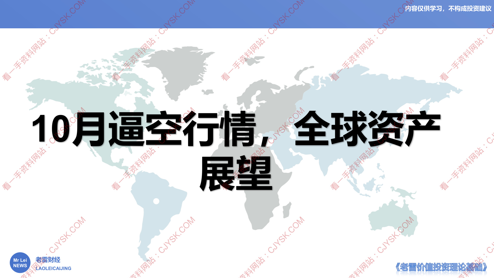
老雷开场先做情绪管理：反复强调"做投资不要有情绪、不要赌、不要抄底摸顶"，先把心态摆正再谈方法。随后简短回顾上一节期权课内容，并给出本场直播的三个预期——让大家带着明确的"预期管理"来听课，避免只盯着涨跌。
本节定位：4小时长课的"地图"：先立方法论（逼空逻辑+三大资产锚点），再给结论（汇/债/股/大宗展望）。所有结论都建立在"10Y美债+标普+纳指"三个锚点上。
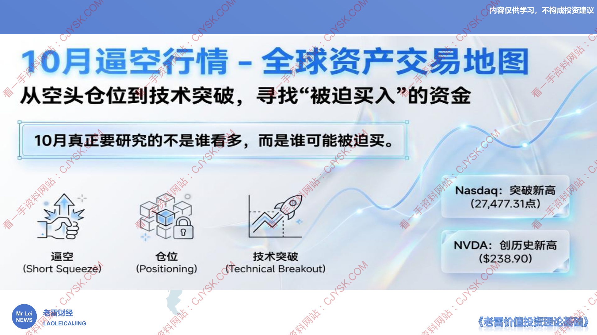
开篇点出全课最重要的视角切换：10月真正要研究的不是谁看多，而是谁可能被迫买。做投资要站在量化视角、找"被迫买入"的接盘资金——当空头仓位高企、技术突破发生时，空头被迫平仓就是最强的买盘。
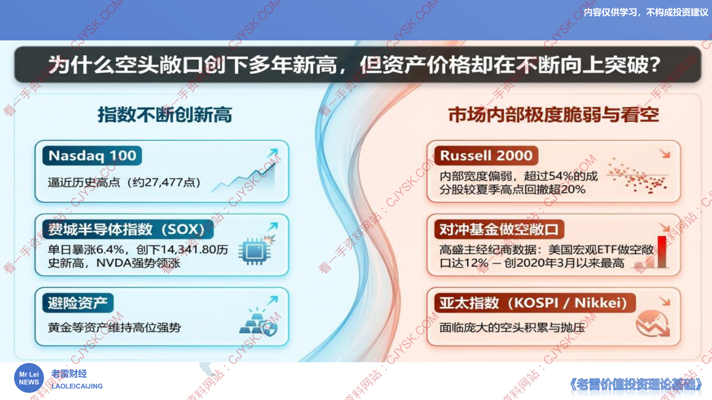
| 指数不断创新高 | 市场内部极度脆弱与看空 |
|---|---|
| Nasdaq 100逼近历史高点（约27,477点）； 费城半导体指数（SOX）单日暴涨6.4%创14,341.80历史新高，NVDA领涨； 黄金等避险资产维持高位强势。 |
Russell 2000内部宽度偏弱，超54%成分股较夏季高点回撤超20%； 高盛主经纪商数据：美国宏观ETF做空敞口达12%，创2020年3月以来最高； 亚太指数（KOSPI/Nikkei）面临庞大空头积累与抛压。 |
这就是"指数新高 vs 内部看空"的撕裂：指数被少数巨头撑住，但内部资金在暗中撤退。
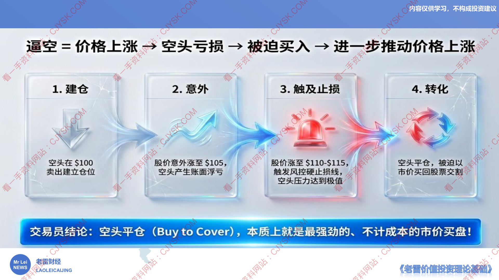
普通投资者问"涨了这么多还能买吗？"，机构交易员只问四个问题：①谁在做空？②空头成本在哪里？③哪个位置会止损？④谁会被迫买回来？
逼空传导链：建仓（空头在$100卖出）→ 意外（股价涨至$105产生账面浮亏）→ 触及止损（涨至$110-115触发风控硬止损线，空头压力达极值）→ 转化（空头被迫以市价买回平仓交割）。
交易员结论：空头平仓（Buy to Cover）本质上就是最强劲的、不计成本的市价买盘！看空观点无需改变，绝对亏损额会直接触发平仓系统指令。
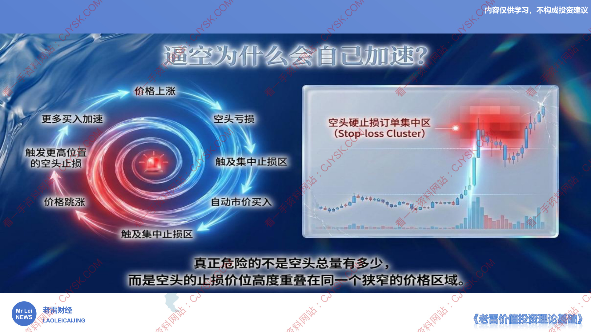
价格上涨 → 空头亏损 → 触及集中止损区 → 自动市价买入 → 价格跳涨 → 触发更高位置的空头止损 → 更多买入加速 → 再次推动价格上涨，形成闭环。
关键认知：真正危险的不是空头总量有多少，而是空头的止损价位高度重叠在同一个狭窄的价格区域（Stop-loss Cluster）。
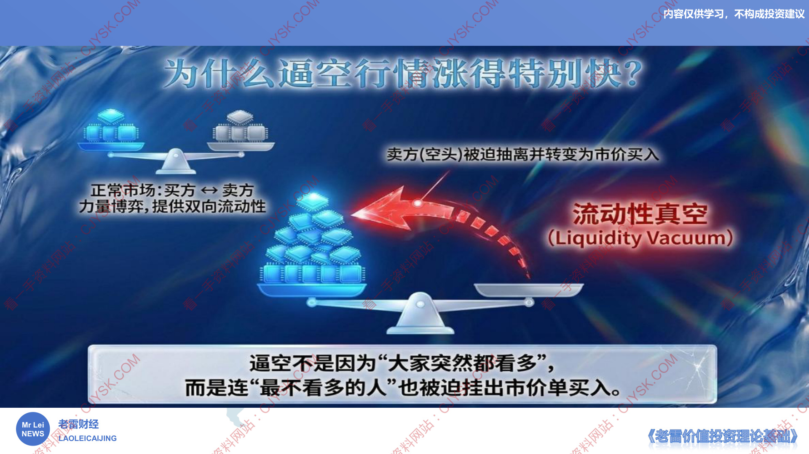
正常市场是买方↔卖方力量博弈，提供双向流动性；逼空时卖方（空头）被迫抽离并转变为市价买入，形成流动性真空（Liquidity Vacuum）。
核心金句：逼空不是因为"大家突然都看多"，而是连"最不看多的人"也被迫挂出市价单买入。
成交量瞬间异动是逼空行情的核心指纹。
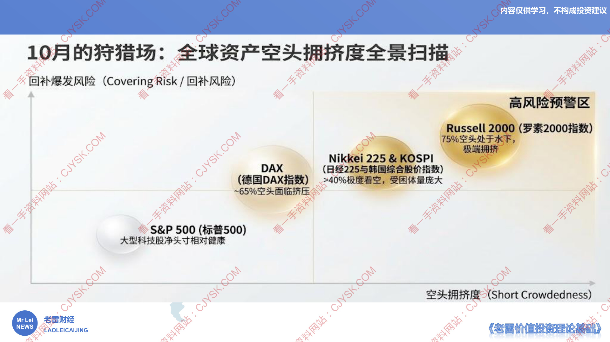
| 指数 | 空头拥挤度 | 风险定位 |
|---|---|---|
| 标普500 | 大型科技股净头寸相对健康 | 低风险区 |
| 德国DAX | 约65%空头面临挤压 | 中高风险区 |
| 日经225 & KOSPI | 大于40%极度看空，受困体量庞大 | 高风险区 |
| Russell 2000 | 75%空头处于水下，极端拥挤 | 高风险预警区（燃料最充足） |
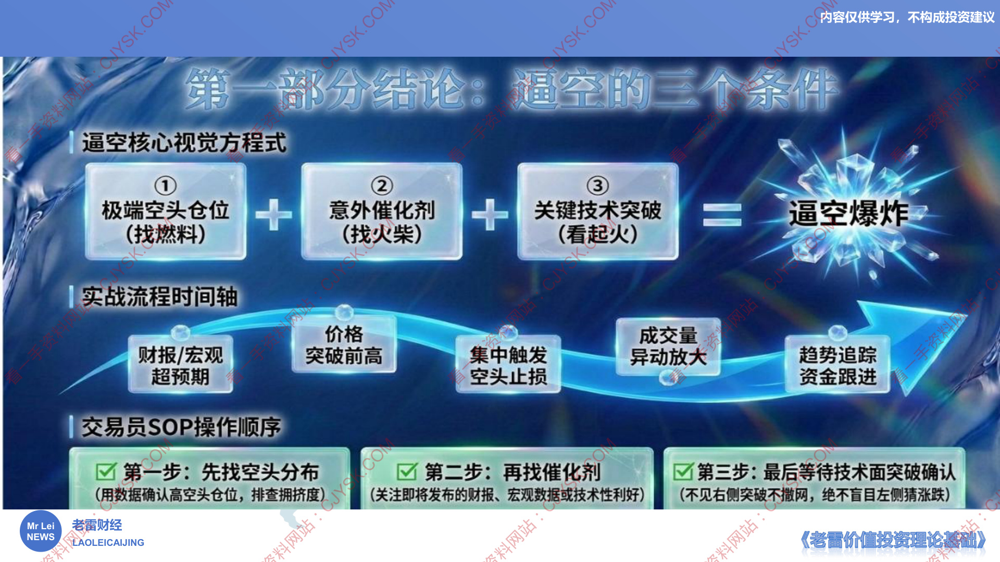
逼空核心视觉方程式：极端空头仓位（找燃料） + 意外催化剂（找火柴） + 关键技术突破（看起火） ＝ 逼空爆炸
实战流程时间轴：财报/宏观超预期 → 价格突破前高 → 集中触发空头止损 → 成交量异动放大 → 趋势追踪资金（CTA）跟进。
交易员SOP：第一步先找空头分布（用数据确认高空头仓位、排查拥挤度）；第二步再找催化剂（关注即将发布的财报、宏观数据）；第三步最后等待技术面突破确认——不见右侧突破不撒网，绝不盲目左侧猜涨跌。
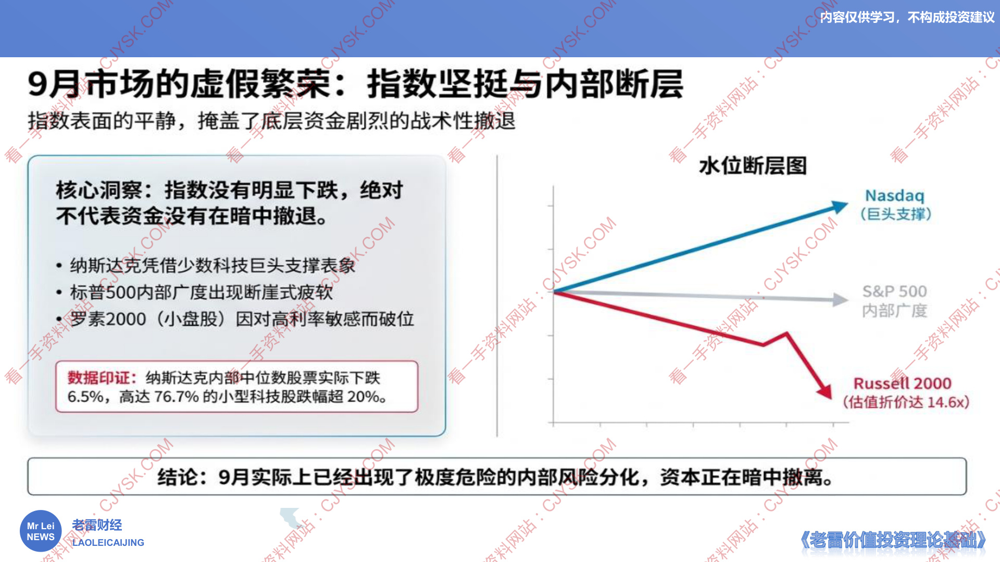
结论：指数没有明显下跌，绝对不代表资金没有在暗中撤退——9月已经出现极度危险的内部风险分化。
机构投资者在高息环境下进行隐秘仓位防御的四种手段：①主动减仓（对冲基金总杠杆率骤降至历史单月个位数百分位）；②增加空头对冲（美国宏观ETF空头敞口飙升至总敞口12%，创2020年3月以来极值）；③买入保护性期权（建立隐秘防线）；④降低组合Beta（资金向现金流充裕的避险巨头集中）。
结论：市场表面没跌，但底层资金仓位结构已变得极为谨慎轻仓——这为后续的"逼空"埋下完美伏笔。
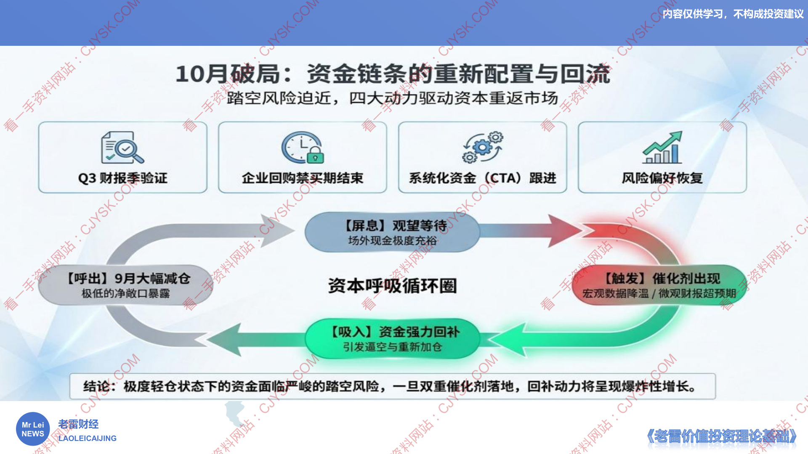
资本呼吸循环圈：【呼出】9月大幅减仓（极低净敞口）→【屏息】观望等待（场外现金极度充裕）→【触发】催化剂出现（宏观数据降温/微观财报超预期）→【吸入】资金强力回补（引发逼空与重新加仓）。
四大动力：①Q3财报季验证；②企业回购禁买期结束（10月中下旬起，圣诞前预计约1.3万亿美元回购弹药）；③系统化资金（CTA）跟进；④风险偏好恢复。
结论：极度轻仓状态下的资金面临严峻的踏空风险，一旦双重催化剂落地，回补动力将呈现爆炸性增长。
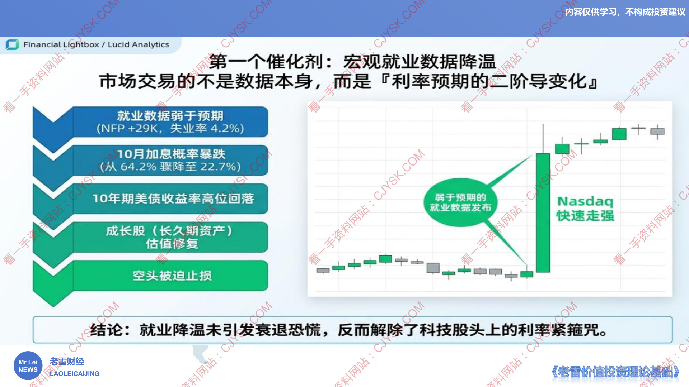
传导链：就业数据弱于预期（NFP +29K，失业率4.2%）→ 10月加息概率暴跌（从64.2%骤降至22.7%）→ 10年期美债收益率高位回落 → 成长股（长久期资产）估值修复 → 空头被迫止损。
结论：就业降温未引发衰退恐慌，反而解除了科技股头上的"利率紧箍咒"。市场交易的不是数据本身，而是利率预期的二阶导变化。
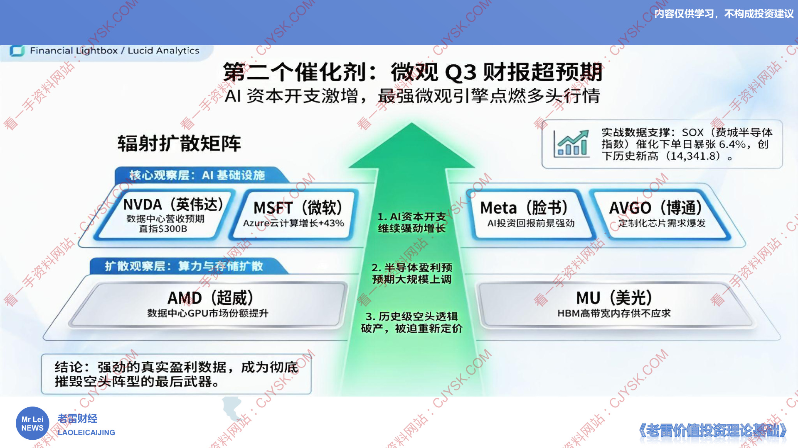
辐射扩散矩阵：核心观察层（AI基础设施）——NVDA数据中心营收预期直指$300B、MSFT Azure云计算增长+43%、Meta AI投资回报前景强劲、AVGO定制化芯片需求爆发；扩散观察层（算力与存储）——AMD数据中心GPU市场份额提升、MU（美光）HBM高带宽内存供不应求。
三大驱动：①AI资本开支继续强劲增长；②半导体盈利预期大规模上调；③历史级空头逻辑破产，被迫重新定价。
实战数据支撑：SOX（费城半导体指数）催化下单日暴涨6.4%，创下历史新高14,341.8。
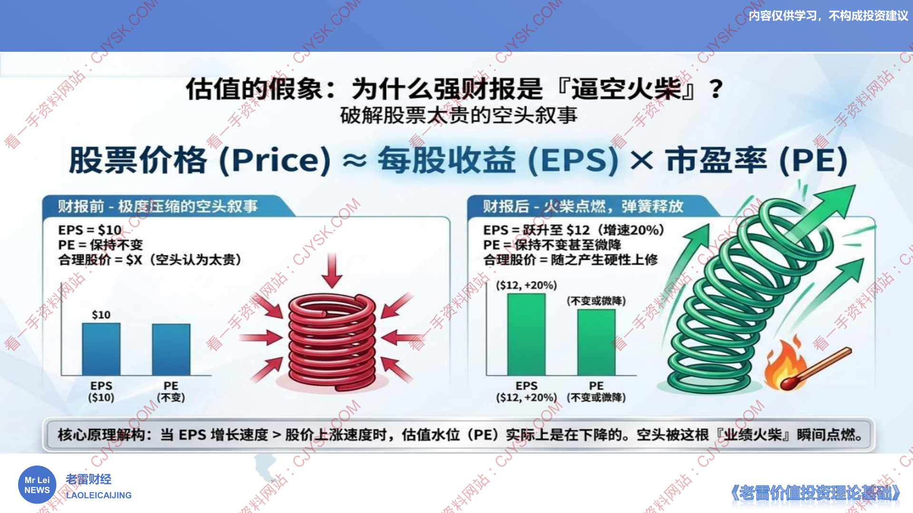
核心公式：股票价格 ≈ 每股收益（EPS）× 市盈率（PE）。财报前EPS=$10、PE不变，空头认为股价太贵；财报后EPS跃升至$12（+20%）、PE不变甚至微降，合理股价随之硬性上修——空头被这根"业绩火柴"瞬间点燃。
核心原理：当EPS增长速度 > 股价上涨速度时，估值水位（PE）实际上是在下降的。见顶不是观察价格，是观察EPS。
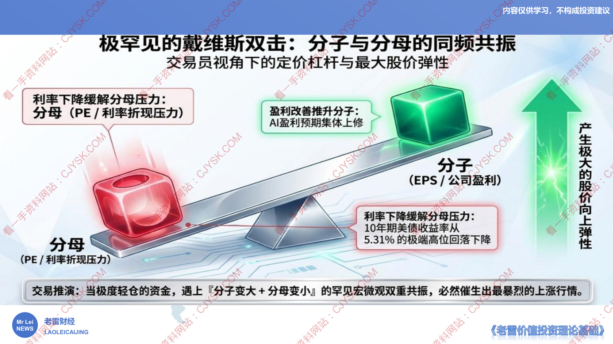
交易推演：当极度轻仓的资金，遇上"分子变大+分母变小"的罕见宏微观双重共振，必然催生出最暴烈的上涨行情。
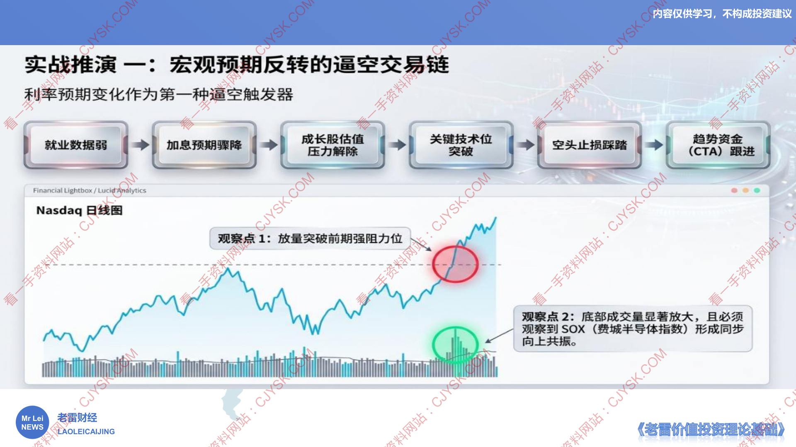
利率预期变化作为第一种逼空触发器：就业数据弱 → 加息预期骤降 → 成长股估值压力解除 → 关键技术位突破 → 空头止损踩踏 → 趋势资金（CTA）跟进。
观察点：①Nasdaq放量突破前期强阻力位；②底部成交量显著放大，且必须观察到SOX形成同步向上共振。
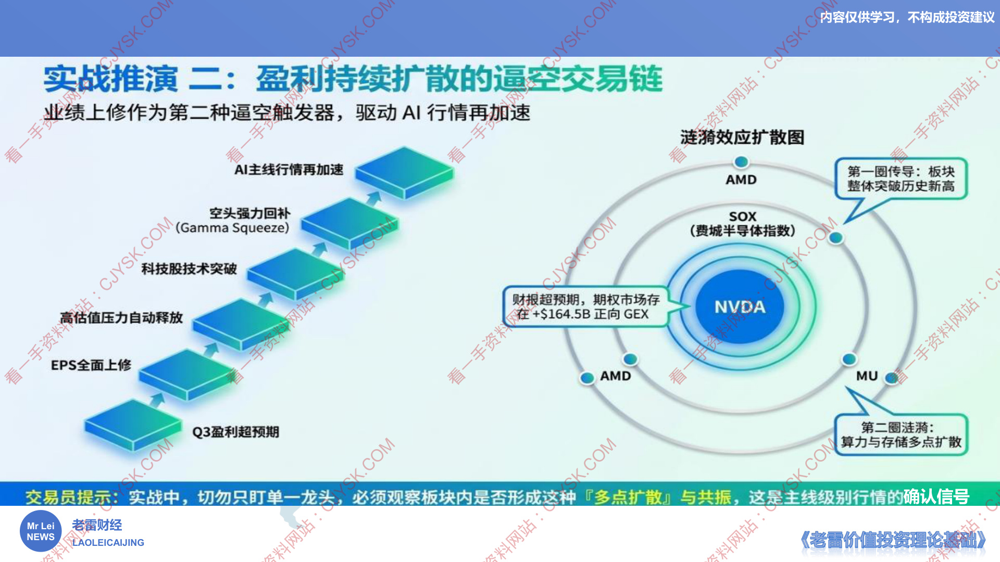
业绩上修作为第二种逼空触发器：Q3盈利超预期 → EPS全面上修 → 高估值压力自动释放 → 科技股技术突破 → 空头强力回补（Gamma Squeeze）→ AI主线行情再加速。
涟漪效应扩散图：核心NVDA（财报超预期，期权市场存在+$164.5B正向GEX）→ 第一圈传导SOX/AMD板块整体突破历史新高 → 第二圈涟漪算力与存储（MU）多点扩散。
交易员提示：实战中切勿只盯单一龙头，必须观察板块内是否形成"多点扩散"与共振，这是主线级别行情的确认信号。为什么发动者不是台积电（被动因素）而是英伟达/博通/迈威尔（主动因素）——主动因素才有"意外性"。
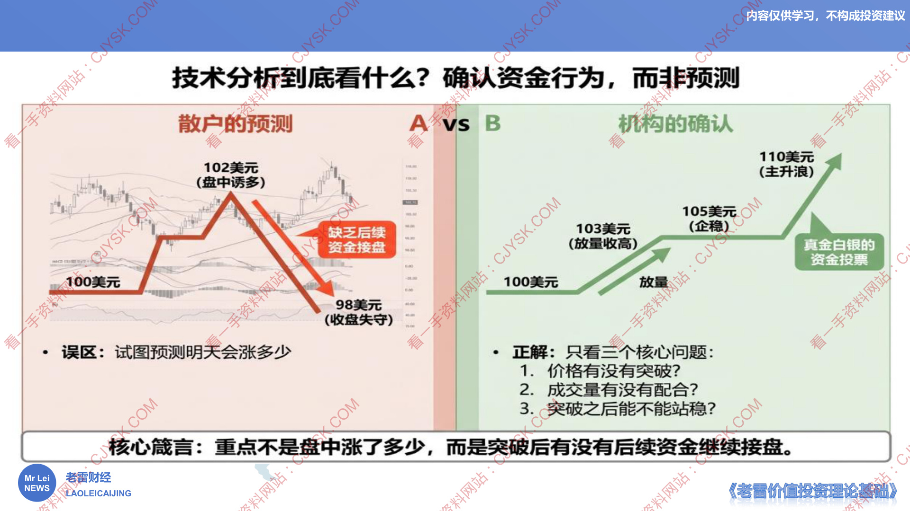
核心箴言：重点不是盘中涨了多少，而是突破后有没有后续资金继续接盘（看两步：涨跌之后有没有资金接）。
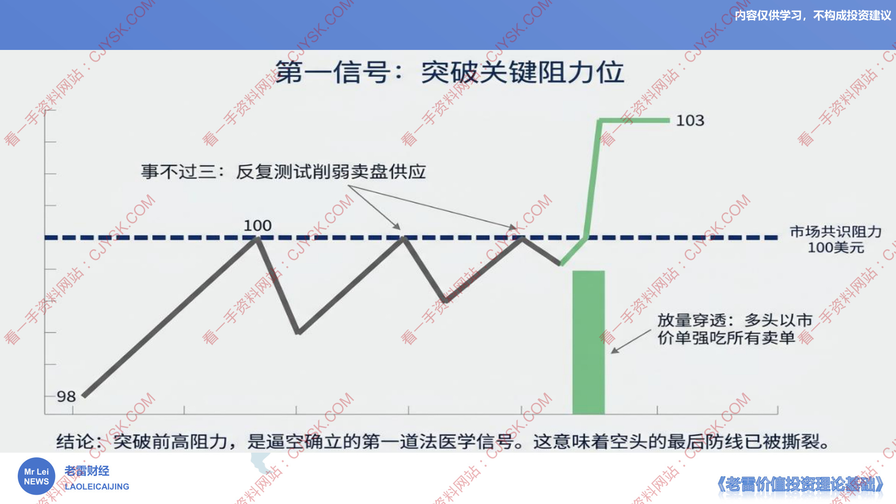
价格三次测试100美元共识阻力位——事不过三：反复测试削弱卖盘供应；随后放量穿透：多头以市价单强吃所有卖单，价格突破至103。
结论：突破前高阻力是逼空确立的第一道法医学信号——空头的最后防线已被撕裂。
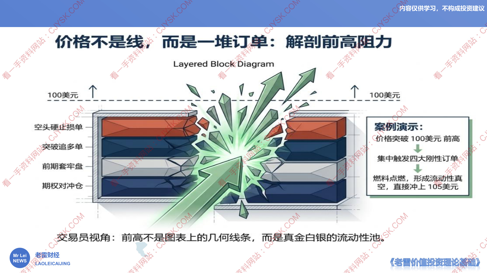
前高100美元由四类订单构成流动性池：空头硬止损单、突破追多单、前期套牢盘、期权对冲仓。价格突破前高即集中触发四大刚性订单 → 燃料点燃、形成流动性真空 → 直接冲上105美元。
交易者视角：前高不是图表上的几何线条，而是真金白银的流动性池；空单密集区就是燃料。
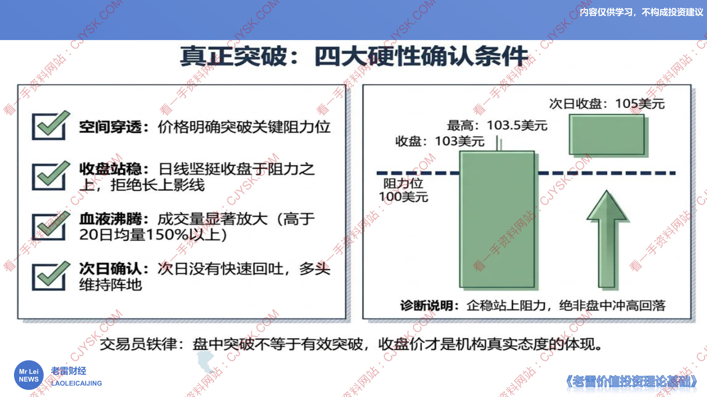
交易员铁律：盘中突破不等于有效突破，收盘价才是机构真实态度的体现。
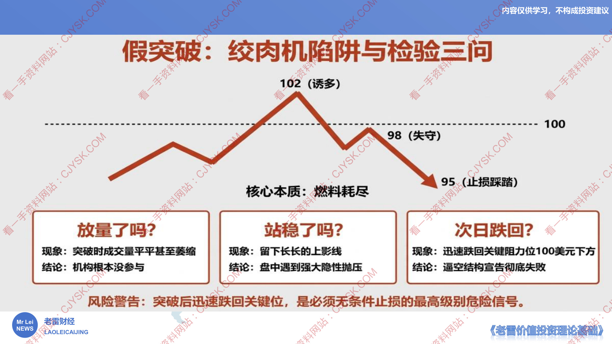
| 检验三问 | 现象 | 结论 |
|---|---|---|
| 放量了吗？ | 突破时成交量平平甚至萎缩 | 机构根本没参与 |
| 站稳了吗？ | 留下长长的上影线 | 盘中遇到强大隐性抛压 |
| 次日跌回？ | 迅速跌回关键阻力位100美元下方 | 逼空结构宣告彻底失败 |
风险警告：突破后迅速跌回关键位，是必须无条件止损的最高级别危险信号（核心本质：燃料耗尽）。
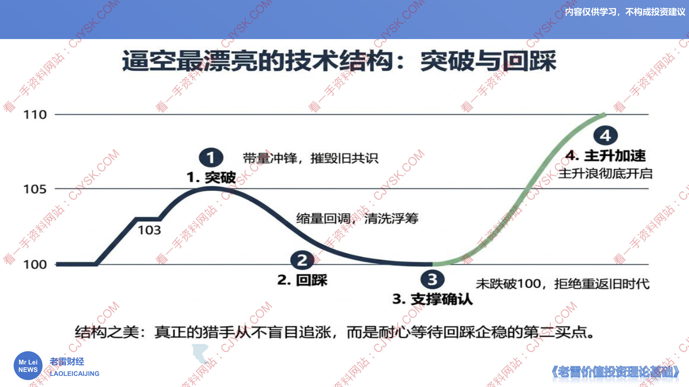
四阶段：①突破（带量冲锋，摧毁旧共识）→ ②回踩（缩量回调，清洗浮筹）→ ③支撑确认（未跌破100，拒绝重返旧时代）→ ④主升加速（主升浪彻底开启）。
结构之美：真正的猎手从不盲目追涨，而是耐心等待回踩企稳的第二买点。
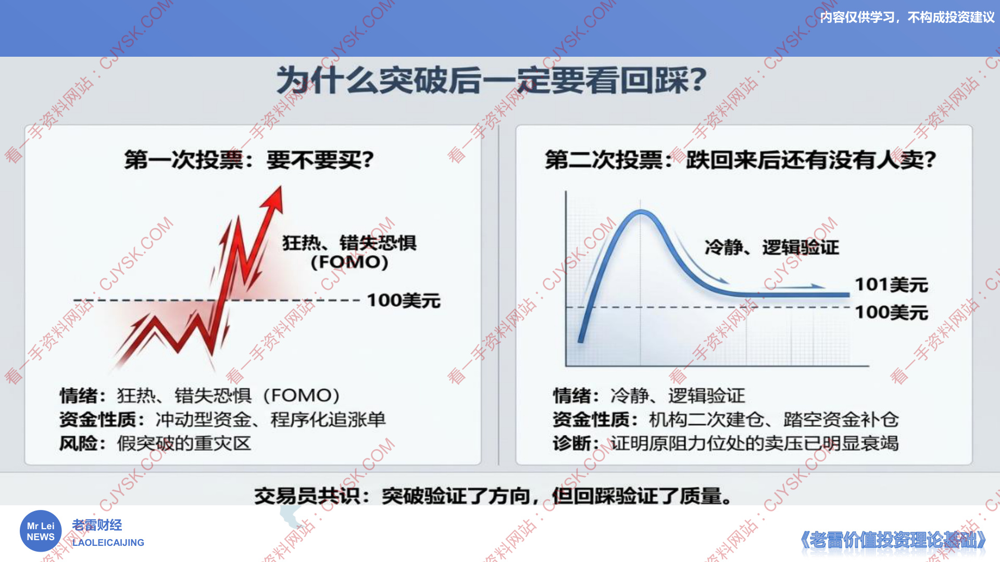
第一次投票（突破时）：要不要买？情绪狂热、错失恐惧（FOMO），资金性质为冲动型资金+程序化追涨单，风险是假突破的重灾区；第二次投票（回踩后）：跌回来后还有没有人卖？情绪冷静、逻辑验证，资金性质为机构二次建仓+踏空资金补仓，证明原阻力位处的卖压已明显衰竭。
交易员共识：突破验证了方向，但回踩验证了质量。
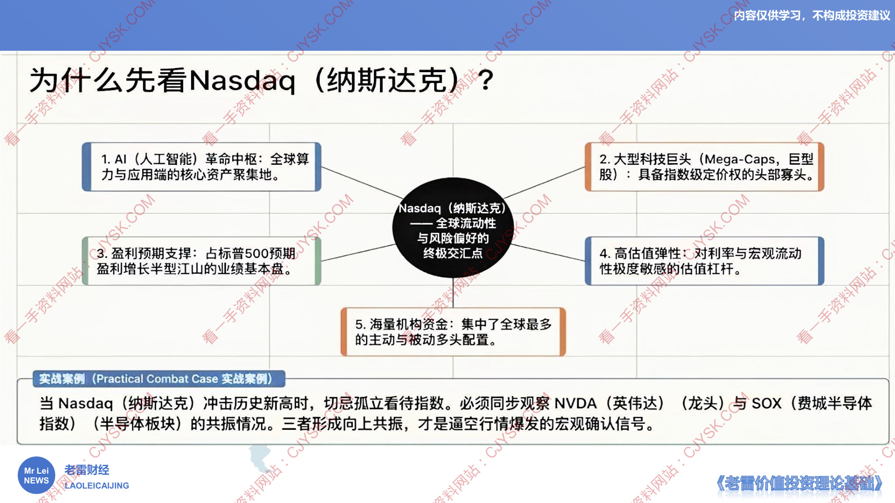
实战案例：当纳斯达克冲击历史新高时，切忌孤立看待指数——必须同步观察NVDA（龙头）与SOX（半导体板块）的共振，三者形成向上共振才是逼空行情爆发的宏观确认信号。
老雷的三道坎：①10年期美债永远是全球所有大类资产计价过程的通用分母（常量，不是变量——永远找不到比10Y美债更重要的资产）；②标普500代表世界经济的晴雨表（五大行业：科技/金融/医疗保健/能源/消费，有进出制，标普健康世界就健康）；③纳斯达克代表流动性和风险偏好的交汇点（纳指100阴跌/大跌=全球没流动性了，钱全去债了）。
这三个资产你能搞明白，就懂了80%——每天发生的任何一件事，都能通过10Y美债、标普、纳指分析出来，准确率80%以上。
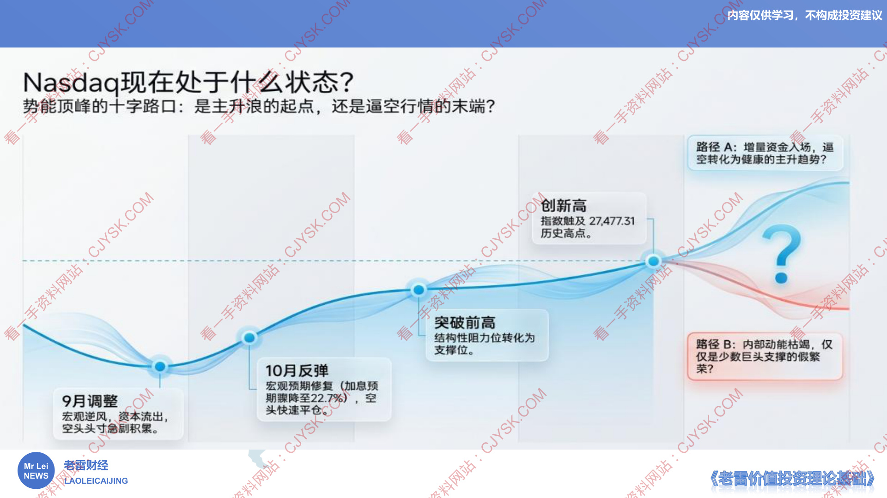
9月调整（宏观逆风，资本流出，空头头寸急剧积累）→ 10月反弹（宏观预期修复，加息预期骤降至22.7%，空头快速平仓）→ 突破前高（结构性阻力位转化为支撑位）→ 创新高（触及27,477.31历史高点）。
两条路径：路径A增量资金入场，逼空转化为健康的主升趋势？（打问号）；路径B内部动能枯竭，仅仅是少数巨头支撑的假繁荣？——所以现在市场只能两头押注（一边通过ETF做高指数，一边拼命建看跌期权）。AI到目前为止唯一确定性预期是发展规模越来越大，副作用多大没人知道。
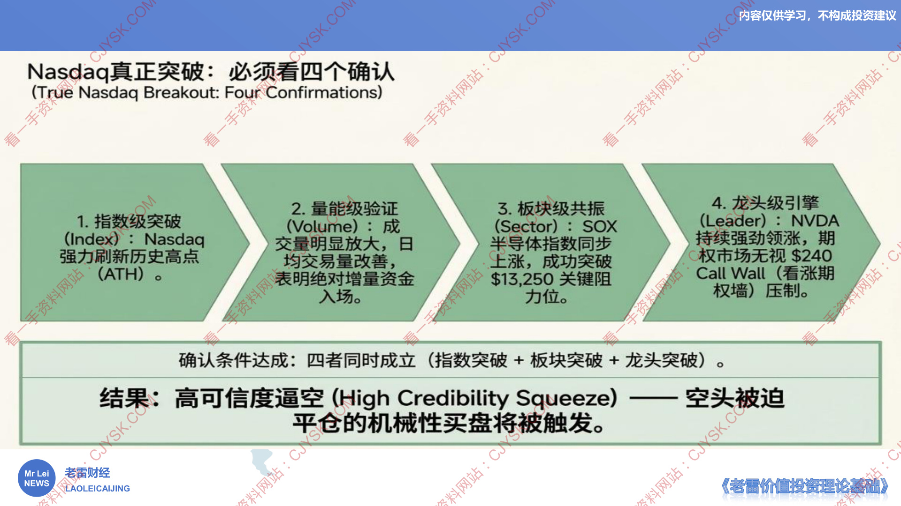
确认条件达成＝高可信度逼空：四者同时成立（指数突破+板块突破+龙头突破），空头被迫平仓的机械性买盘将被触发。
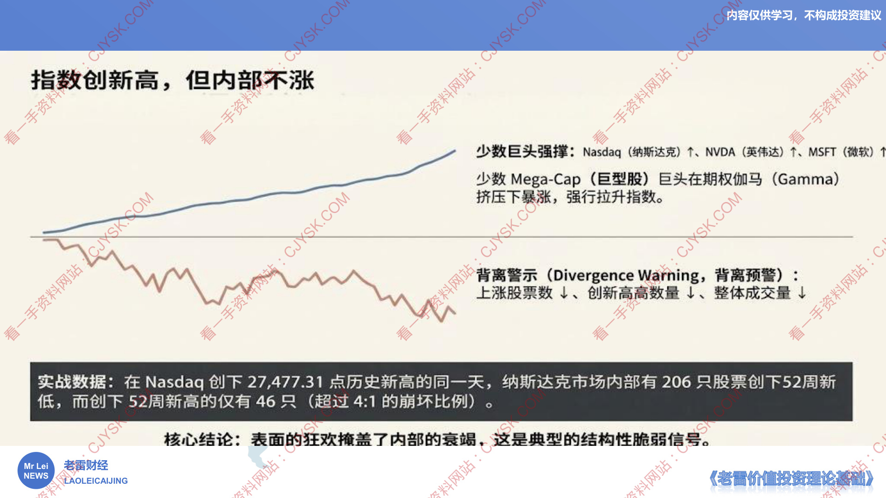
少数Mega-Cap巨头（Nasdaq↑/NVDA↑/MSFT↑）在期权伽马（Gamma）挤压下暴涨，强行拉升指数；背离警示：上涨股票数↓、创新高数量↓、整体成交量↓。
实战数据：Nasdaq创27,477.31点新高同日，内部有206只股票创52周新低，而创52周新高的仅46只（超过4:1的崩坏比例）。
核心结论：表面的狂欢掩盖了内部的衰竭——这是典型的结构性脆弱信号。最后一个季度，AI挤压其他市场是大概率事件。
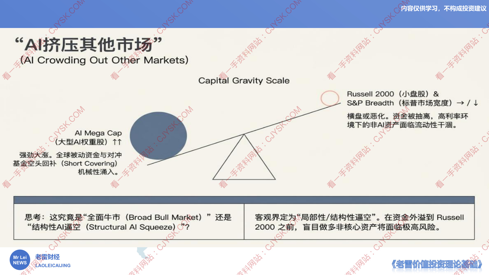
资本重力天平：AI Mega Cap强劲大涨（全球被动资金+对冲基金空头回补机械性涌入）；Russell 2000 & 标普市场宽度横盘或恶化（高利率环境下非AI资产面临流动性干涸）。
客观界定：当前是"局部性/结构性逼空"。在资金外溢到Russell 2000之前，盲目做多非核心资产将面临极高风险。
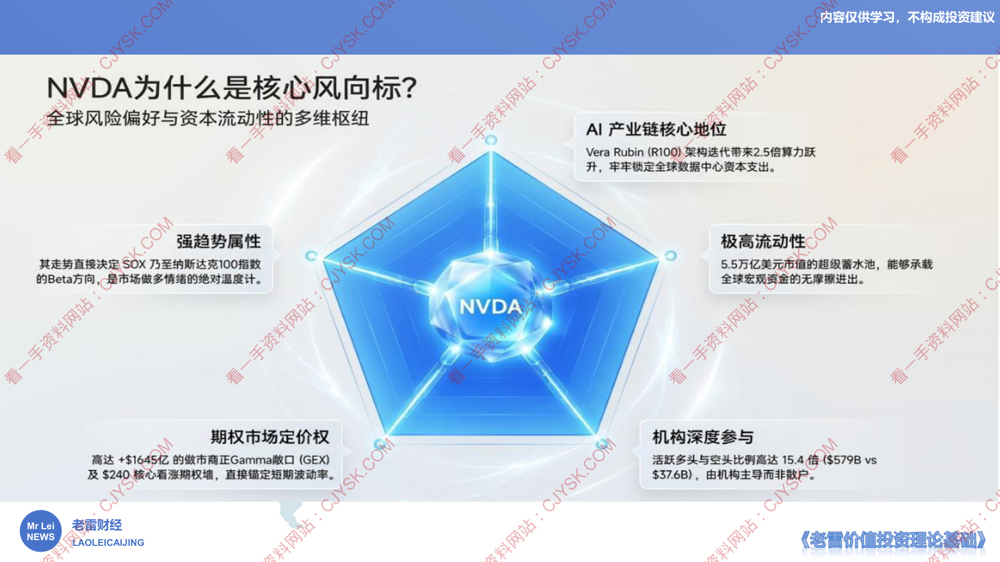
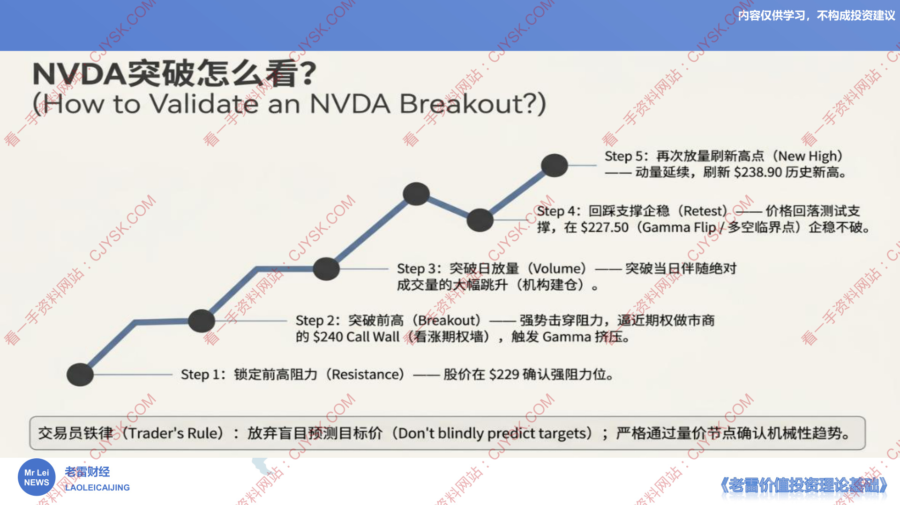
结论：在没有新的调价器出现前，英伟达波动区间就是229~240，这代表纳指100四季度波动区间也这么窄；一旦逼空行情启动，240就是逼空行情的起点——老雷认为到圣诞节，英伟达有机会去275（330/345过度乐观）。
另一种情况：英伟达涨但SOX不涨（AMD/博通/美光滞涨或下跌）= 资金仅因流动性极度匮乏疯狂抱团确定性唯一标的 → 没有行业逼空，只有英伟达逼空；两个同时突破才是逼空行情全面到来。
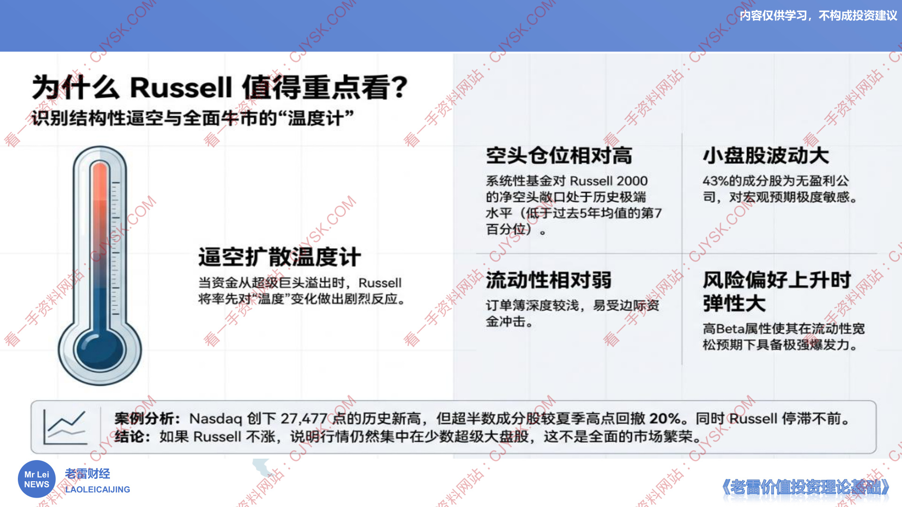
在这一轮逼空行情里，纳指是起点/触发点，罗素是温度计。纳指能不能带来全面逼空，要看罗素起不起来：如果纳指一直起来、罗素不动甚至下跌，就证明这轮逼空没有形成，只是短期的小逼空。
罗素四大特征：①空头仓位相对高（系统性基金净空头敞口处于历史极端水平，低于过去5年均值的第7百分位）；②小盘股波动大（43%成分股为无盈利公司，对宏观预期极度敏感）；③流动性相对弱（订单簿深度浅）；④风险偏好上升时弹性大（高Beta）。
案例分析：Nasdaq创27,477点历史新高，但超半数成分股较夏季高点回撤20%，同时Russell停滞不前——如果Russell不涨，说明行情仍集中在少数超级大盘股，这不是全面的市场繁荣。老雷此前强调：罗素PE已被杀14.6倍，目前空头仓位75%，从燃料角度，罗素是堆柴火最密集的地方。
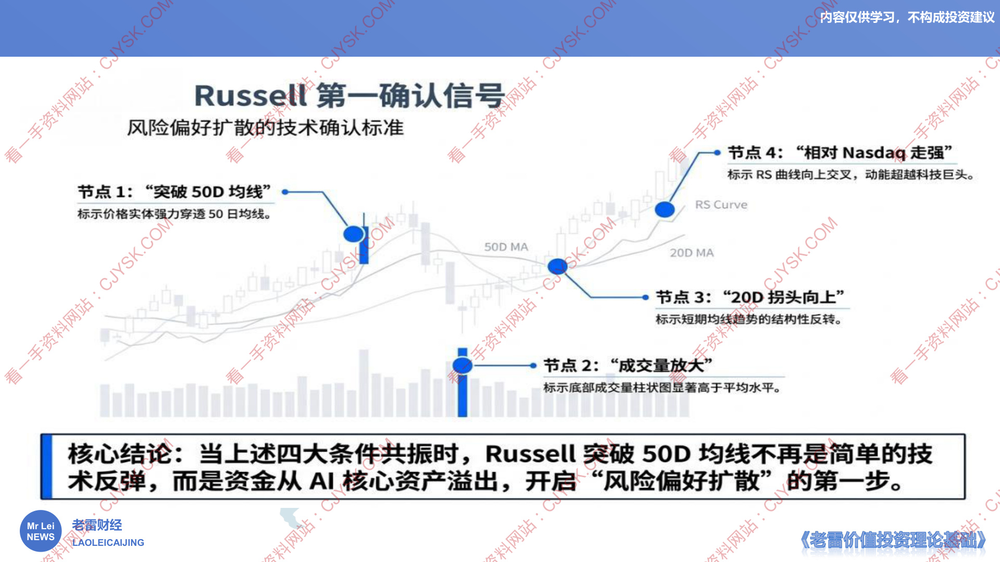
四大条件共振：①突破50D均线（价格实体强力穿透）；②成交量放大（底部成交量柱状图显著高于平均水平）；③20D拐头向上（短期均线趋势结构性反转）；④相对Nasdaq走强（RS曲线向上交叉，动能超越科技巨头）。
核心结论：当上述四大条件共振时，Russell突破50D均线不再是简单的技术反弹，而是资金从AI核心资产溢出、开启"风险偏好扩散"的第一步。什么时候叫全面风险偏好？纳斯达克、标普、费城半导体、罗素四大资产同时走强（放量涨）＝确定性的全面逼空牛市，缺一不可。
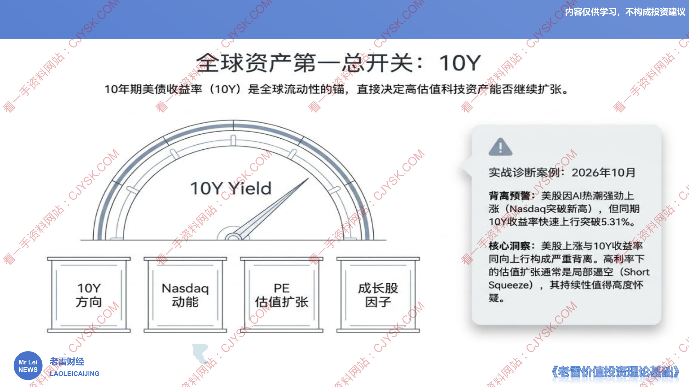
第一个总开关：10年期美债——全球流动性的锚，直接决定高估值科技资产能否继续扩张。
实战诊断案例（2026年10月）：背离预警——美股因AI热潮强劲上涨（Nasdaq突破新高），但同期10Y收益率快速上行突破5.31%。美股上涨与10Y收益率同向上行构成严重背离：高利率下的估值扩张通常是局部逼空（Short Squeeze），其持续性值得高度怀疑。
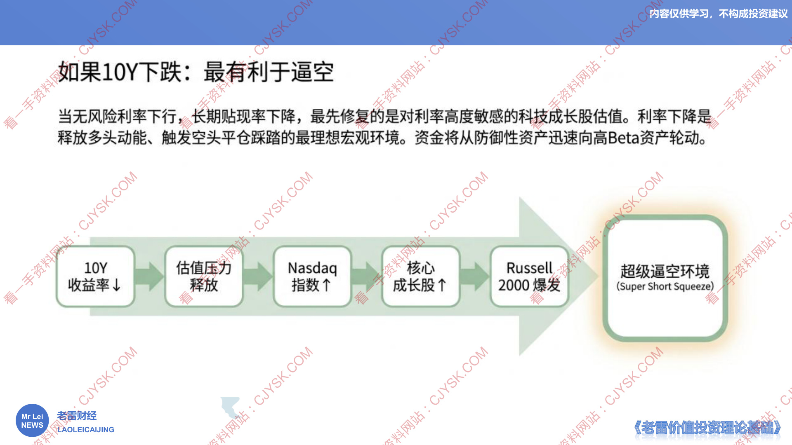
如果10Y下跌：最有利于逼空——无风险利率下行，最先修复对利率高度敏感的科技成长股估值；传导链：10Y收益率↓ → 估值压力释放 → Nasdaq指数↑ → 核心成长股↑ → Russell 2000爆发 → 超级逼空环境。如果10年期美债继续突破（收益率上行），逼空可能结束。
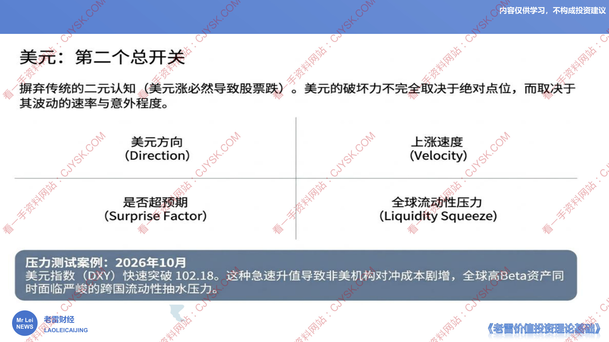
第二个总开关：美元——摒弃"美元涨必然导致股票跌"的二元认知。美元的破坏力不完全取决于绝对点位，而取决于波动的速率与意外程度（方向/上涨速度/是否超预期/全球流动性压力）。压力测试案例：2026年10月DXY快速突破102.18，非美机构对冲成本剧增，全球高Beta资产面临跨国流动性抽水。
原油：目前100以上，老雷认为正常情况下第四季度应该回到85-90。日元：不能忽略的反向逼空（下周讲植田和男/日本央行时展开）。韩指：AI的高贝塔市场。
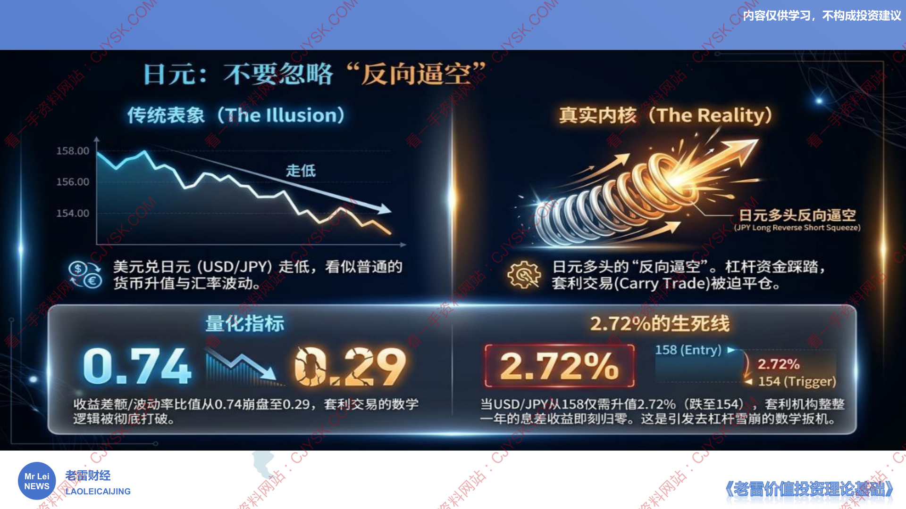
日元反向逼空（量化指标）：收益差额/波动率比值从0.74崩盘至0.29，套利交易（Carry Trade）数学逻辑被彻底打破；2.72%生死线——USD/JPY从158仅需升值2.72%（跌至154），套利机构整整一年的息差收益即刻归零，这是引发去杠杆雪崩的数学扳机。美元和日元的方向越统一，这个世界就会越健康。
全球逼空地图：美国、欧洲、日本、韩国、中国、中国香港。从老雷视角，第四季度（10月起）这轮逼空行情肯定从AI开始——看AI的放量速度能不能放到整个盘面；至于是不是五大行业一起逼空，要看AI逼空的效率。
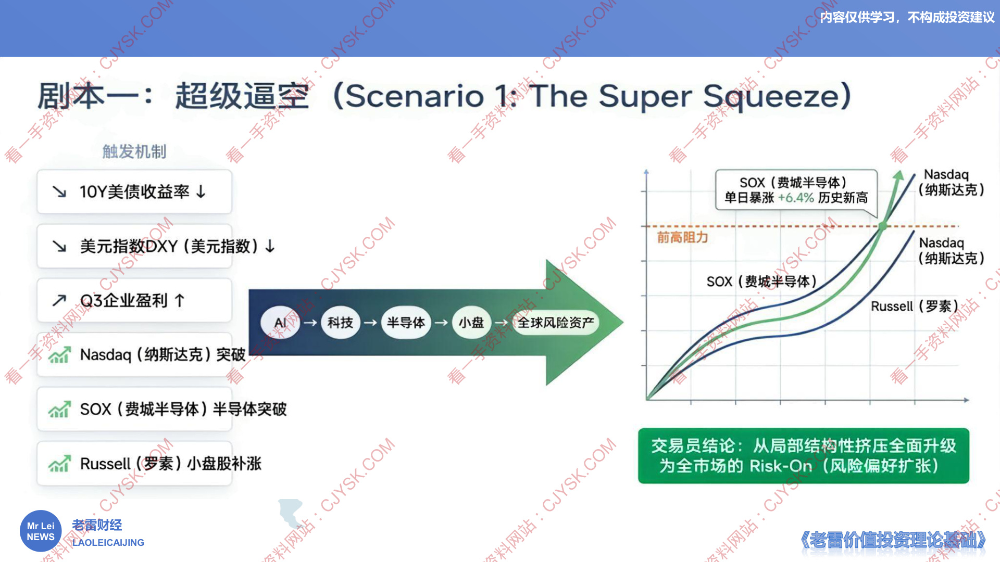
剧本一：超级逼空——触发机制：10Y美债收益率↓ + 美元指数DXY↓ + Q3企业盈利↑ + Nasdaq突破 + SOX突破 + Russell小盘股补涨；传导逻辑：AI → 科技 → 半导体 → 小盘 → 全球风险资产；SOX单日暴涨6.4%历史新高。交易员结论：从局部结构性挤压全面升级为全市场的Risk-On（风险偏好扩张）。
剧本二：AI结构性逼空——只有AI（科技）逼空，其他行业不参与，指数新高但内部不涨。
剧本三：逼空失败——5个信号同时出现则逼空逻辑需重新评估。
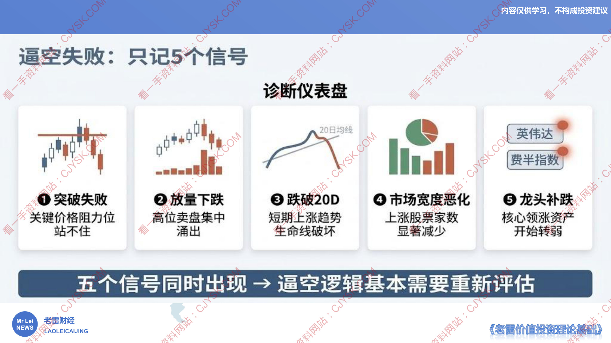
| ①突破失败 | ②放量下跌 | ③跌破20D | ④市场宽度恶化 | ⑤龙头补跌 |
|---|---|---|---|---|
| 关键价格阻力位站不住 | 高位卖盘集中涌出 | 短期上涨趋势生命线破坏 | 上涨股票家数显著减少 | 核心领涨资产开始转弱 |
老雷总判断：基于AI的第四季度科技逼空相对有确定性，逼空失败的概率不高；什么时候意味着逼空进度末端，下节课再讲。
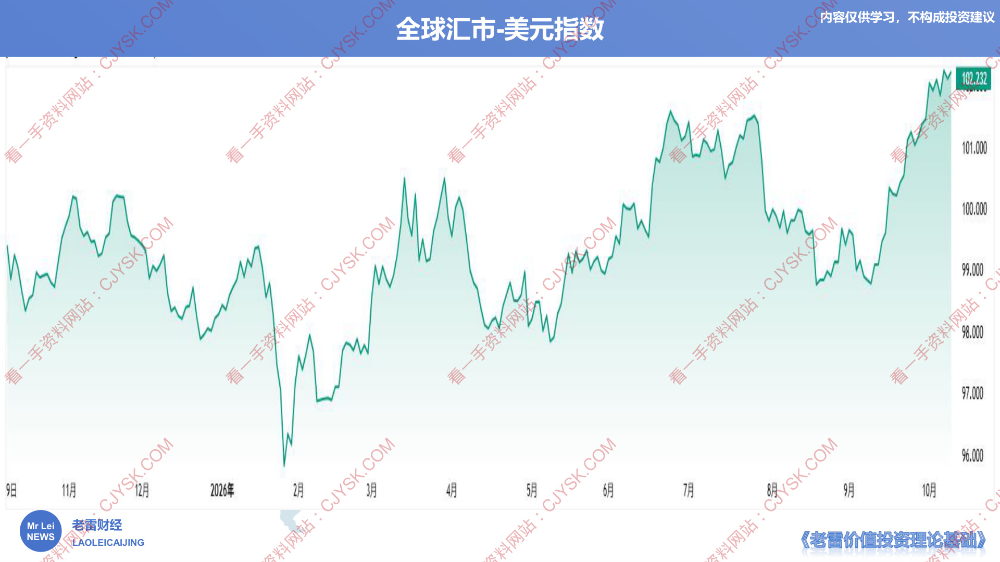
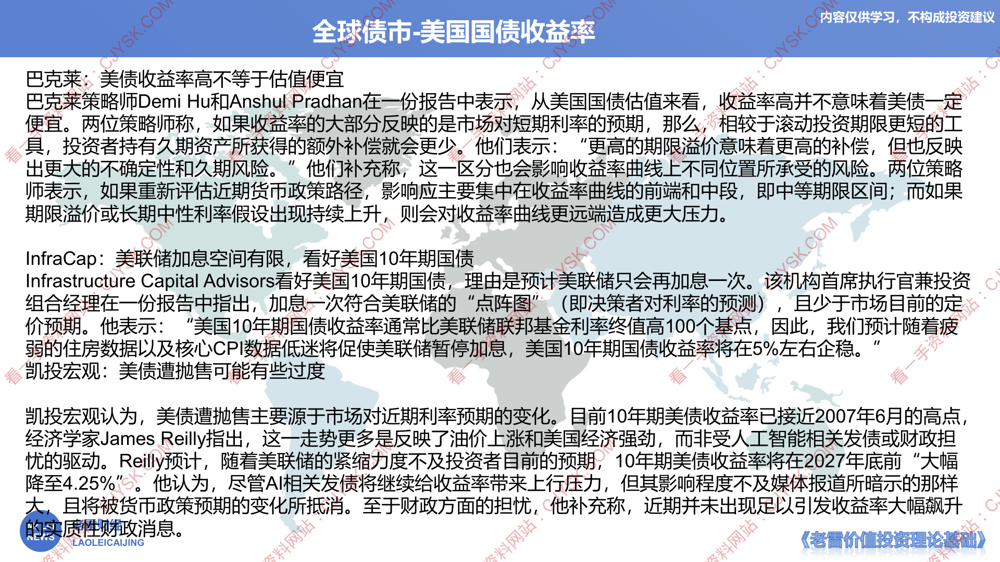
这个世界上有几个债是必须做的：①10年期美债 ②2年期美债 ③欧债（德/法/英/意，能买到什么买什么）④日债（20年/30年期）⑤印债（收益率高、安全性高）——铁定要配，能配到什么配什么。
机构观点：巴克莱——美债收益率高不等于估值便宜，区分"短期利率预期"与"期限溢价"；InfraCap——美联储加息空间有限，预计10Y美债收益率在5%左右企稳；凯投宏观——美债遭抛售可能有些过度，预计10Y美债收益率2027年底前大幅降至4.25%。
| 指数/市场 | 老雷观点 |
|---|---|
| 标普500 | 各机构预期不一，老雷认为圣诞节前后8000比较靠谱（有说8700的，有说暴跌的） |
| 道琼斯 | 距高点调了约10%，复苏会相对慢一些 |
| 纳斯达克 | 创新高，不用思考 |
| 罗素2000 | 调了不少（核心权重调了20%），四季度有逼空放量预期，但高利率+高美元下整体健康度很低 |
| DAX/富时/CAC | CAC调了不少——马克龙政策红利一两年前已耗尽，马上换届对CAC是利好 |
| 日经225 | 没调多少，逼空行情到年底8000；10月逼空行情对225的帮助值得期待 |
| 上证/恒指 | 越来越好吗？老雷判断：越来越好 |
| 印度 | 被油价压制，油价下来它就起来 |
| 韩指（KOSPI） | 圣诞节前后9000；但韩指回购10月6日停了，短期动能弱，日经逼空确定性更高 |
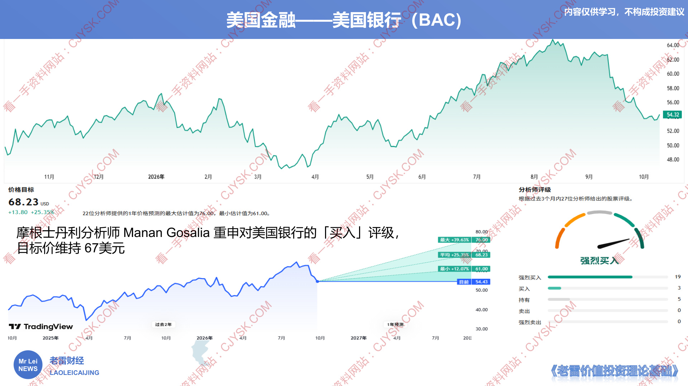
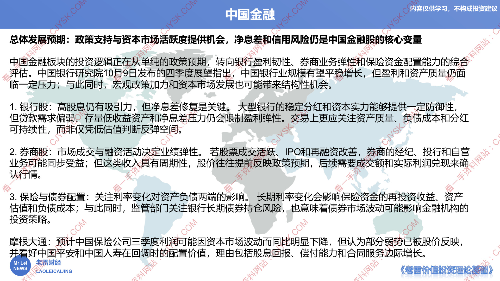
中国金融（摩根大通观点）：预计中国保险公司三季度利润可能因资本市场波动而同比明显下降，但部分弱势已被股价反映，看好中国平安和中国人寿在回调时的配置价值（股息回报、偿付能力、合同服务边际增长）。
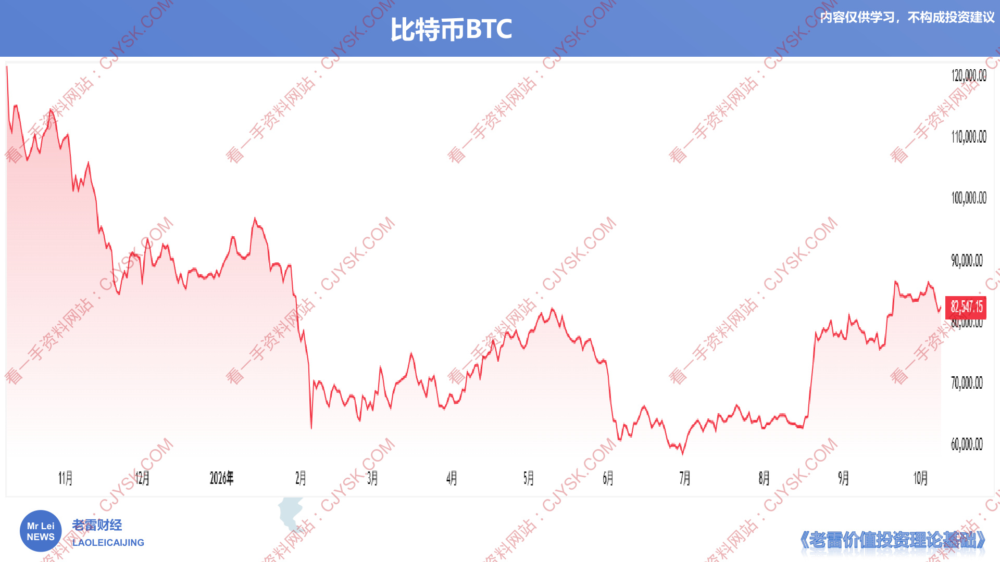
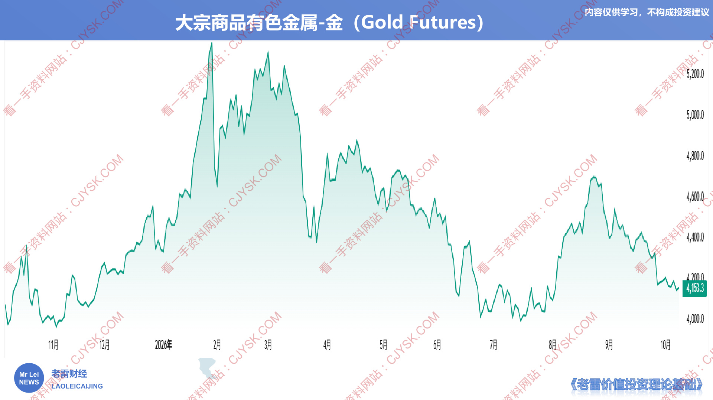
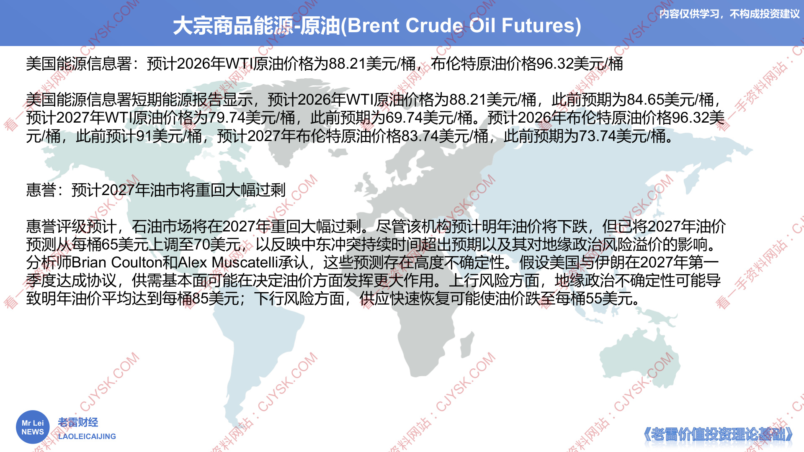
结尾彩蛋：老雷总结——"今天开始不是文盲了"（此前比喻散户99.9%是文盲，只有懂美债、标普、纳指才算懂投资）；日经逼空确定性高于韩指（韩指回购10月6日停，短期动能弱）；下期线上课接着讲期权。周末愉快！